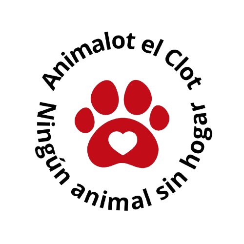

Inicio
Adopta
Sobre nosotros
Contacto
¡Animal seleccionado!
¡Has seleccionado a [nombre del animal]!
Selecciona a la persona que va a adoptarlo:
Animales disponibles para adoptar
Personas que ya han adoptado a nuestros animales